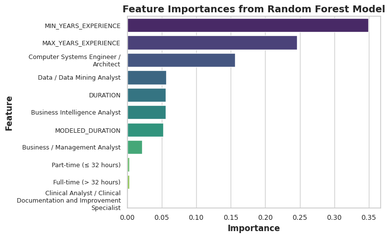

All tasks for this lab must be performed on your AWS EC2 instance. Ensure you are connected to your instance before proceeding. You can connect in one of the following ways:
If you are your friend’s code make sure to put their and your name on your document. Failure to do so will result in a zero for both.
Use lab 8 as it is for the regression part of the assignment
The document contains partial code snippets that you need to complete.
GitHub Classroom Repository
To complete this assignment, you must first accept the GitHub Classroom Lab 08 request. Once accepted, follow the instructions below to clone the repository and start working.
Ensure all work is performed inside this cloned directory.
Option 2: Using VS Code Git Source Control
Open Visual Studio Code.
Click on the Source Control tab on the left panel.
Click on Clone Repository.
Paste the repository URL: https://github.com/YOUR_USERNAME/YOUR_REPO_NAME.git.
Select a local directory where you want to store the repository.
Once cloned, open the folder in VS Code and start working within it.
Objectives
Use PySpark to process the Lightcast dataset.
Engineer features from structured columns for salary prediction.
Train Linear Regression model.
Evaluate models using RMSE and R².
Visualize predictions using diagnostic plots.
Push work to GitHub and submit the repository link.
Setup
The instruction below provides you with general keywords for columns used in the lightcast file. See the data schema generated after the load dataset code above to use proper column name. For visualizations, tables, or summaries, please customize colors, fonts, and styles as appropriate to avoid a 2.5-point deduction. Also, provide a two-sentence explanation describing key insights drawn from each section’s code and outputs.
Follow the steps below as necessary, use your best judgement in importing/installing/creating/saving files as needed.
Create a new Jupyter Notebook in your ad688-sp25-lab08 directory named lab08_yourname.ipynb, if the file exists make sure to change the name.
Use your EC2 instance for this lab.
Ensure the lightcast_data.csv file is available on the EC2 instance. if not then Download the dataset
Add the dataset to .gitignore to avoid pushing large files to GitHub. Open your .gitignore file and add:
Make sure to create a virtual environment and install the required Python libraries if needed, don’t forget to activate it:
Install the required Python libraries if needed, you can also use the given requirement file to install the packages to the virtual environment:
Use Pyspark to the lightcast_data.csv file into a DataFrame:
You can reuse the previous code.
Copying code from your friend constitutes plagiarism. DO NOT DO THIS.
from pyspark.sql import SparkSessionimport pandas as pdimport plotly.express as pximport plotly.io as pioimport numpy as npnp.random.seed(42)pio.renderers.default ="notebook"# Initialize Spark Sessionspark = SparkSession.builder.appName("LightcastData").getOrCreate()# Load Datadf = spark.read.option("header", "true").option("inferSchema", "true").option("multiLine","true").option("escape", "\"").csv("./data/lightcast_job_postings.csv")# Show Schema and Sample Data# df.printSchema() # df.show(5)
Setting default log level to "WARN".
To adjust logging level use sc.setLogLevel(newLevel). For SparkR, use setLogLevel(newLevel).
25/04/23 02:18:11 WARN NativeCodeLoader: Unable to load native-hadoop library for your platform... using builtin-java classes where applicable
2 Feature Engineering
Feature Engineering is a crucial step in preparing your data for machine learning. In this lab, we will focus on the following tasks:
Drop rows with missing values in the target variable and key features.
By now you are already familiar with the code and the data. Based on your understanding please choose any 3 (my code output has 10) variables as:
three continuous variables and, MIN_YEARS_EXPERIENCE (total 4, use your best judgment!)
two categorical .
Your dependent variable (y) is SALARY.
Convert categorical variables into numerical representations using StringIndexer and OneHotEncoder.
Assemble features into a single vector using VectorAssembler.
Split the data into training and testing sets.
You can use pipeline to do the above steps in one go.
Create a new column MIN_YEARS_EXPERIENCE_SQ by squaring the MIN_YEARS_EXPERIENCE column.
Assemble the polynomial features into a new vector column features_poly using VectorAssembler.
Show the final structure of the DataFrame with the new features.
from pyspark.sql.functions import col, powfrom pyspark.ml.feature import StringIndexer, OneHotEncoder, VectorAssemblerfrom pyspark.ml import Pipeline# Drop rows with NA values in relevant columns df = df.dropna(subset=['DURATION', 'MODELED_DURATION', 'MIN_YEARS_EXPERIENCE', 'MAX_YEARS_EXPERIENCE', 'EMPLOYMENT_TYPE_NAME', 'LOT_V6_OCCUPATION_NAME','SALARY'])# Pick 3 continuous, MIN_YEARS_EXPERIENCE and 2 categorical columns# Categorical columnscategorical_cols = ['EMPLOYMENT_TYPE_NAME', 'LOT_V6_OCCUPATION_NAME'] # separate the categorical columns here for one hot encodingcontinuous_cols = ['DURATION', 'MODELED_DURATION', 'MIN_YEARS_EXPERIENCE', 'MAX_YEARS_EXPERIENCE'] # Index and One-Hot Encodeindexers = [StringIndexer(inputCol=col, outputCol=f"{col}_idx", handleInvalid='skip') for col in categorical_cols]encoders = [OneHotEncoder(inputCol=f"{col}_idx", outputCol=f"{col}_vec") for col in categorical_cols]# Assemble base features (for GLR and Random Forest)assembler = VectorAssembler( inputCols=continuous_cols # continuous column names here+ [f"{col}_vec"for col in categorical_cols], # columns from OneHotEncoder here outputCol="features")# Build pipeline and transformpipeline = Pipeline(stages=indexers + encoders + [assembler]) # Create a pipeline to index, encode and assemble featuresdata = pipeline.fit(df).transform(df)# Create squared term for Polynomial Regressiondata = data.withColumn('MIN_YEARS_EXPERIENCE_SQ', pow(col('MIN_YEARS_EXPERIENCE'), 2))# Assemble polynomial featuresassembler_poly = VectorAssembler( inputCols=continuous_cols + ['MIN_YEARS_EXPERIENCE_SQ'] # continuous column + polynomial names here+ [f"{col}_vec"for col in categorical_cols], # columns from OneHotEncoder here outputCol="features_poly")data = assembler_poly.transform(data)# Show final structuredata.select("SALARY", "features", "features_poly").show(5, truncate=False)
+------+----------------------------------------------+---------------------------------------------------+
|SALARY|features |features_poly |
+------+----------------------------------------------+---------------------------------------------------+
|131100|(11,[0,1,2,3,4,8],[11.0,11.0,2.0,2.0,1.0,1.0])|[11.0,11.0,2.0,2.0,4.0,1.0,0.0,0.0,0.0,1.0,0.0,0.0]|
|136950|(11,[0,1,2,3,4,8],[28.0,28.0,3.0,3.0,1.0,1.0])|[28.0,28.0,3.0,3.0,9.0,1.0,0.0,0.0,0.0,1.0,0.0,0.0]|
|136950|(11,[0,1,2,3,4,8],[28.0,28.0,3.0,3.0,1.0,1.0])|[28.0,28.0,3.0,3.0,9.0,1.0,0.0,0.0,0.0,1.0,0.0,0.0]|
|104000|(11,[0,1,2,3,4,7],[8.0,8.0,3.0,3.0,1.0,1.0]) |[8.0,8.0,3.0,3.0,9.0,1.0,0.0,0.0,1.0,0.0,0.0,0.0] |
|80000 |(11,[0,1,2,3,4,9],[37.0,37.0,3.0,3.0,1.0,1.0])|[37.0,37.0,3.0,3.0,9.0,1.0,0.0,0.0,0.0,0.0,1.0,0.0]|
+------+----------------------------------------------+---------------------------------------------------+
only showing top 5 rows
3 Train/Test Split
Perform a random split of the data into training and testing sets.
Set a random seed for reproducibility.
You can choose a number for splitting to your liking, justify your choice.
25/04/23 02:19:45 WARN SparkStringUtils: Truncated the string representation of a plan since it was too large. This behavior can be adjusted by setting 'spark.sql.debug.maxToStringFields'.
[Stage 19:> (0 + 1) / 1]
(1567, 138)
(361, 138)
4 Linear Regression (Get this model from Lab 5.2)
Train a Linear Regression model using the training data. This model is from Lab 5.2 with 3 more added features
Make sure to use the features column from the assembled data frame to fit the model.
You will run in to an important issue here. Please make an effort in figuring it by yourself. This is one of the most asked interview questions in CapitalOne’s management recruiting program.
Evaluate the model on the test data.
Print the coefficients, intercept, R², RMSE, and MAE.
Use the summary object to extract the coefficients and their standard errors, t-values, and p-values.
Create a DataFrame to display the coefficients, standard errors, t-values, p-values, and confidence intervals.
Interpret the coefficients and their significance and explain the model performance metrics.
from pyspark.ml.regression import LinearRegressionfrom tabulate import tabulatetrain_data = train_data.withColumn("SALARY", col("SALARY").cast("double"))test_data = test_data.withColumn("SALARY", col("SALARY").cast("double"))feature_names_lr = assembler.getInputCols()lr = LinearRegression(featuresCol="features", labelCol="SALARY", regParam=0.1)lr_model = lr.fit(train_data)summary = lr_model.summarytest_results_lr = lr_model.evaluate(test_data)# Coefficients and Interceptprint("Intercept: {:.4f}".format(lr_model.intercept))print("Coefficients:")for i, coef inenumerate(lr_model.coefficients):print(f" Feature {i +1}: {coef:.4f}")# Model Evaluationprint("R² on test data: {:.4f}".format(test_results_lr.r2))print("RMSE on test data: {:.4f}".format(test_results_lr.rootMeanSquaredError))print("MAE on test data: {:.4f}".format(test_results_lr.meanAbsoluteError))
[Stage 24:> (0 + 1) / 1]
Intercept: 89368.6358
Coefficients:
Feature 1: -100.3177
Feature 2: 140.7146
Feature 3: 3403.7721
Feature 4: 3403.7721
Feature 5: -11808.3291
Feature 6: -22928.0227
Feature 7: -4754.1446
Feature 8: 10074.2613
Feature 9: 34763.6306
Feature 10: -13628.4302
Feature 11: -17691.4635
R² on test data: 0.4731
RMSE on test data: 24622.9188
MAE on test data: 18493.2211
# Print the coefficient tablecoefs_lr = [lr_model.intercept] +list(lr_model.coefficients)se_lr =list(summary.coefficientStandardErrors)tvals_lr =list(summary.tValues)pvals_lr =list(summary.pValues)ci_low_lr = [c -1.96* s for c, s inzip(coefs_lr, se_lr)]ci_high_lr = [c +1.96* s for c, s inzip(coefs_lr, se_lr)]features_lr = ["Intercept"] + [f"Feature_{i}"for i inrange(1, len(coefs_lr))]pipeline_model = pipeline.fit(df)indexer1_model = pipeline_model.stages[0]categories1 = indexer1_model.labelsindexer2_model = pipeline_model.stages[1]categories2 = indexer2_model.labelsencoded_categories1 = categories1[:-1]encoded_feature_names1 = [f"{categorical_cols[0]}={cat}"for cat in encoded_categories1]encoded_categories2 = categories2[:-1]encoded_feature_names2 = [f"{categorical_cols[1]}={cat}"for cat in encoded_categories2]feature_names = ["Intercept"] + continuous_cols + encoded_feature_names1 + encoded_feature_names2# print("---This is Diagnostic check, No need to print it in the final doc---")# print("Length of features:", len(feature_names))# print("Length of coefs:", len(coefs_lr))# print("Length of se:", len(se_lr))# print("Length of tvals:", len(tvals_lr))# print("Length of pvals:", len(pvals_lr))coef_table_lr = pd.DataFrame({"Feature": feature_names,"Estimate": [f"{c:.4f}"for c in coefs_lr],"Std Error": [f"{s:.4f}"for s in se_lr],"t-stat": [f"{t:.4f}"for t in tvals_lr],"p-Value": [f"{p:.4f}"for p in pvals_lr],"CI Lower": [f"{cl:.4f}"for cl in ci_low_lr],"CI Upper": [f"{ch:.4f}"for ch in ci_high_lr]})print(tabulate(coef_table_lr, headers="keys", tablefmt="pretty"))coef_table_lr.to_csv("_output/lr_summary_pretty.csv", index=False)
The Intercept is the baseline salary when all features are zero or at reference levels. This doesn’t have statistical significance. The coefficient of feature DURATION shows that for each additional unit of duration, salary decreases by about $100, though this isn’t statistically significant. MODELED_DURATION, MIN_YEARS_EXPERIENCE and MAX_YEARS_EXPERIENCE variables show positive relationships with salary but aren’t statistically significant.
Feature Part-time employment is not significant in this model, which implies nearly no effect of being part-time vs. reference category (mix type). On the other hand, feature Full-time employment is significant. Full-time jobs pay about $22.9K less than the reference category, which is an unexpected finding. Most occupational categories aren’t statistically significant. Clinical Analyst is the only occupation with statistical significance (p=0.0000), associated with approximately $17.7K lower salary compared to the reference category.
The R-Squared of this model shows that it explains about 47.31% of the variance in salary. This model has moderate explanatory power, suggesting other important predictors are missing or salary is inherently noisy. The RMSE shows that, on average, the model’s predictions deviate from actual values by about $24.6K. This is relatively high, depending on the salary scale of this dataset. The MAE value shows that the average absolute difference between predicted and actual salaries is about $18.5K, indicating substantial prediction error. These error metrics suggest that while the model captures some patterns, there’s still substantial variability in salaries not explained by these features. Additional predictors or different modeling approaches might be beneficial to improve prediction accuracy.
4.1 Generalized Linear Regression Summary
The summary of the Generalized Linear Regression model provides important insights into the model’s performance and the significance of each feature. The coefficients indicate the relationship between each feature and the target variable (salary), while the standard errors, t-values, and p-values help assess the reliability of these estimates.
Please interpret them in the context of your data and model.
Feature Names are purposefully not printed in the output. You can use the features variable to print them out.
from pyspark.ml.regression import GeneralizedLinearRegressionglr = GeneralizedLinearRegression( featuresCol="features", # set the features column name here, labelCol="SALARY", # set the label column name here, family="gaussian", link="identity", # standard linear regression maxIter=10, regParam=0.3)glr_model = glr.fit(train_data)# fit the model heresummary_glr = glr_model.summary# Pull feature names directly from Java backendfeature_names_glr = summary_glr._call_java("featureNames")# Construct full table including interceptfeatures_glr = ["Intercept"] + feature_names_glr # add an empty column for intercept with features herecoefs_glr = [glr_model.intercept] +list(glr_model.coefficients) # combine intercept with coefficients herese_glr =list(summary_glr.coefficientStandardErrors) # list standard errors heretvals_glr =list(summary_glr.tValues) # list t-values herepvals_glr =list(summary_glr.pValues) # list t-values here# print("---This is Diagnostic check, No need to print it in the final doc---")# print("---The numbers below should all be same---")# print("---If not then adjust the array above---")# print("Length of features:", len(features_glr))# print("Length of coefs:", len(coefs_glr))# print("Length of se:", len(se_glr))# print("Length of tvals:", len(tvals_glr))# print("Length of pvals:", len(pvals_glr))
import pandas as pdfrom tabulate import tabulateimport pandas as pdfrom IPython.display import HTMLcoef_table_glr = pd.DataFrame({"Feature": features_glr,"Estimate": [f"{v:.4f}"if v isnotNoneelseNonefor v in coefs_glr],"Std Error": [f"{v:.4f}"if v isnotNoneelseNonefor v in se_glr],"t-stat": [f"{v:.4f}"if v isnotNoneelseNonefor v in tvals_glr],"P-Value": [f"{v:.4f}"if v isnotNoneelseNonefor v in pvals_glr]})coef_table_glr.to_csv("_output/glr_summary.csv", index=False)HTML(coef_table_glr.to_html())
Feature
Estimate
Std Error
t-stat
P-Value
0
Intercept
89379.1833
75.9866
-1.3202
0.1870
1
DURATION
-100.3138
85.1870
1.6518
0.0988
2
MODELED_DURATION
140.7113
66392.5537
0.0513
0.9591
3
MIN_YEARS_EXPERIENCE
3403.7624
66392.5537
0.0513
0.9591
4
MAX_YEARS_EXPERIENCE
3403.7624
8790.9144
-1.3431
0.1794
5
EMPLOYMENT_TYPE_NAME_vec_Full-time (> 32 hours)
-11807.2847
9652.9016
-2.3751
0.0177
6
EMPLOYMENT_TYPE_NAME_vec_Part-time (≤ 32 hours)
-22926.8109
18554.2395
-0.2569
0.7973
7
LOT_V6_OCCUPATION_NAME_vec_Data / Data Mining Analyst
LOT_V6_OCCUPATION_NAME_vec_Clinical Analyst / Clinical Documentation and Improvement Specialist
-17702.9232
20532.1169
4.3531
0.0000
5 Polymnomial Regression
Train a Polynomial Linear Regression model using the training data.
Make sure to use the features_poly column from the assembled data frame to fit the model.
You will run in to an important issue here. Please make an effort in figuring it by yourself. This is one of the most asked interview questions in CapitalOne’s management recruiting program.
Evaluate the model on the test data.
Print the coefficients, intercept, R², RMSE, and MAE.
Use the summary object to extract the coefficients and their standard errors, t-values, and p-values.
Create a DataFrame to display the coefficients, standard errors, t-values, p-values, and confidence intervals.
Interpret the coefficients and their significance and explain the model performance metrics.
from pyspark.ml.regression import GeneralizedLinearRegressionfrom pyspark.sql.functions import col, pow, sqrt, abs, meanpoly_lr = GeneralizedLinearRegression( featuresCol="features_poly",# set the features_poly column name here, labelCol="SALARY", # set the label column name here, family="gaussian", link="identity", # standard linear regression maxIter=10, regParam=0.3)poly_model = poly_lr.fit(train_data)poly_preds = poly_model.transform(test_data)summary_poly = poly_model.summary# Coefficients and Interceptprint("Intercept: {:.4f}".format(poly_model.intercept))print("Coefficients:")for i, coef inenumerate(poly_model.coefficients):print(f" Feature {i +1}: {coef:.4f}")# Calculate RMSEpredictions = poly_preds.withColumn("residual", col("SALARY") - col("prediction"))rmse = predictions.select(mean(pow(col("residual"), 2)).alias("mse")).first()["mse"] **0.5print(f"RMSE: {rmse:.2f}")# Calculate R²mean_y = predictions.select(mean(col("SALARY"))).first()[0]tss = predictions.select(pow(col("SALARY") - mean_y, 2).alias("tss")).groupBy().sum("tss").first()[0]rss = predictions.select(pow(col("residual"), 2).alias("rss")).groupBy().sum("rss").first()[0]r2 =1- (rss / tss)print(f"R²: {r2:.4f}")# Calculate MAEmae = predictions.select(mean(abs(col("residual"))).alias("mae")).first()["mae"]print(f"MAE: {mae:.2f}")# Coefficients and Intercept# Extract summary datafeature_names_poly = summary_poly._call_java("featureNames")poly_features = ["Intercept"] + feature_names_poly # add an empty column for intercept with features herepoly_coefs = [poly_model.intercept] +list(poly_model.coefficients) # combine intercept with coefficients herepoly_se =list(summary_poly.coefficientStandardErrors) # list standard errors herepoly_tvals =list(summary_poly.tValues) # list t-values herepoly_pvals =list(summary_poly.pValues)# list t-values here# Diagnostics# print("---This is Diagnostic check, No need to print it in the final doc---")# print("---The numbers below should all be same---")# print("---If not then adjust the array above---")# print("Length of features:", len(poly_features))# print("Length of coefs:", len(poly_coefs))# print("Length of se:", len(poly_se))# print("Length of tvals:", len(poly_tvals))# print("Length of pvals:", len(poly_pvals))
The summary of the Generalized Linear Regression model provides important insights into the model’s performance and the significance of each feature. The coefficients indicate the relationship between each feature and the target variable (salary), while the standard errors, t-values, and p-values help assess the reliability of these estimates.
Please interpret them in the context of your data and model.
Feature Names are purposefully not printed in the output. You can use the features variable to print them out.
ci_low_poly = [c -1.96* s for c, s inzip(poly_coefs, poly_se)]ci_high_poly = [c +1.96* s for c, s inzip(poly_coefs, poly_se)]poly_coef_table = pd.DataFrame({"Feature": poly_features,"Estimate": [f"{v:.4f}"if v isnotNoneelseNonefor v in poly_coefs],"Std Error": [f"{v:.4f}"if v isnotNoneelseNonefor v in poly_se],"t-stat": [f"{v:.4f}"if v isnotNoneelseNonefor v in poly_tvals],"P-Value": [f"{v:.4f}"if v isnotNoneelseNonefor v in poly_pvals],"CI Lower": [f"{cl:.4f}"for cl in ci_low_poly],"CI Upper": [f"{ch:.4f}"for ch in ci_high_poly]})poly_coef_table.to_csv("_output/poly_summary.csv", index=False)# print(tabulate(poly_coef_table, headers="keys", tablefmt="pretty"))HTML(poly_coef_table.to_html())
Feature
Estimate
Std Error
t-stat
P-Value
CI Lower
CI Upper
0
Intercept
80026.3570
74.9516
-0.8557
0.3923
79879.4519
80173.2620
1
DURATION
-64.1358
84.1579
1.0452
0.2961
-229.0854
100.8138
2
MODELED_DURATION
87.9631
65341.1437
0.0969
0.9228
-127980.6785
128156.6047
3
MIN_YEARS_EXPERIENCE
6328.9871
65341.1437
0.0969
0.9228
-121739.6545
134397.6287
4
MAX_YEARS_EXPERIENCE
6328.9871
83.9020
-7.1761
0.0000
6164.5392
6493.4351
5
MIN_YEARS_EXPERIENCE_SQ
-602.0926
8652.0498
-1.4433
0.1491
-17560.1102
16355.9250
6
EMPLOYMENT_TYPE_NAME_vec_Full-time (> 32 hours)
-12487.3322
9503.7370
-2.6176
0.0089
-31114.6567
6139.9924
7
EMPLOYMENT_TYPE_NAME_vec_Part-time (≤ 32 hours)
-24876.9825
18260.1623
-0.2363
0.8132
-60666.9007
10912.9356
8
LOT_V6_OCCUPATION_NAME_vec_Data / Data Mining Analyst
LOT_V6_OCCUPATION_NAME_vec_Clinical Analyst / Clinical Documentation and Improvement Specialist
-16018.0412
20248.5602
3.9522
0.0001
-55705.2191
23669.1368
Coefficient Interpretation - Intercept (80026.3570): This is the baseline salary when all other variables are at zero or reference levels. It’s not statistically significant. - DURATION (-64.1358) and MODELED_DURATION (87.9631): Neither shows statistical significance, suggesting these time-related variables don’t significantly impact salary in this model. - Experience Variables: MAX_YEARS_EXPERIENCE (6328.9871) is highly significant (p=0.0000), indicating that each additional year of maximum experience increases salary by about $6K. The squared term for minimum experience MIN_YEARS_EXPERIENCE_SQ isn’t significant, suggesting no strong non-linear relationship. - Employment Type: Full-time workers earn approximately $12.5K less than the reference category, and this is statistically significant (p=0.0089). Part-time workers show a larger negative coefficient (-24876) but it’s not statistically significant. - Occupation: Business Intelligence Analyst shows a significant positive effect (p=0.0425), associated with about $10.3K higher salary compared to the reference category. Clinical Analyst shows a highly significant negative effect (p=0.0001), with salaries about $16K lower. Other occupations don’t show statistical significance.
Model Performance
The R-Squared value shows that the polynomial model explains 48.15% of the variance in salary, slightly better than the previous linear model. The RMSE shows that, on average, the model’s predictions deviate from actual values by about $24.4K, which is slightly lower than the previous model though, but still high. The MAE value shows that the average absolute difference between predicted and actual salaries is about $18.4K, slightly improved from the previous model.
6 Random Forest Regressor
Train a Random Forest Regressor model using the training data.
Make sure to use the features column from the assembled data frame to fit the model.
choose anywhere between 100-500 trees for the model.
choose max depth between 4-10.
remembernumber of trees and max depth are hyperparameters and roughly inversely proportional to each other.
from pyspark.ml.regression import RandomForestRegressor# Initialize Random Forestrf = RandomForestRegressor(featuresCol="features", # set the features column name here, labelCol="SALARY", # set the label column name here, numTrees=200, # number of trees maxDepth=6, # maximum depth of each tree seed=688# for reproducibility )# Train modelrf_model = rf.fit( data.select("SALARY", # set dependent variable here"features"# set features (not features_poly) here ))# Generate predictionsrf_preds = rf_model.transform(data.select("SALARY", "features"))
25/04/23 02:24:09 WARN DAGScheduler: Broadcasting large task binary with size 1025.9 KiB
25/04/23 02:24:10 WARN DAGScheduler: Broadcasting large task binary with size 1794.6 KiB
WARNING: An illegal reflective access operation has occurred
WARNING: Illegal reflective access by org.apache.spark.util.SizeEstimator$ (file:/opt/spark-3.5.4-bin-hadoop3/jars/spark-core_2.12-3.5.4.jar) to field java.nio.charset.Charset.name
WARNING: Please consider reporting this to the maintainers of org.apache.spark.util.SizeEstimator$
WARNING: Use --illegal-access=warn to enable warnings of further illegal reflective access operations
WARNING: All illegal access operations will be denied in a future release
6.1 Feature Importance Plot
Extract the feature importance from the Random Forest model and plot them using Seaborn.
Use a bar plot to visualize the top 10 most important features.
Save the plot as rf_feature_importance.png in the output/ folder.
import pandas as pdimport matplotlib.pyplot as pltimport seaborn as sns# Extract feature importancesdef get_actual_feature_names(df, assembler, encoded_cols): full_feature_names = []for col_name in assembler.getInputCols():if col_name in encoded_cols:try: attr_meta = df.schema[col_name].metadata['ml_attr']['attrs']for attr_group in attr_meta.values():for attr in attr_group: full_feature_names.append(attr['name'])except:# In case metadata is missing or malformed full_feature_names.append(col_name)else: full_feature_names.append(col_name)return full_feature_namesencoded_cols = [f"{col}_vec"for col in categorical_cols] # e.g. ["EDUCATION_LEVELS_NAME_vec", ...]feature_names = get_actual_feature_names(data, assembler, encoded_cols)importances = rf_model.featureImportances.toArray() # add feature importances to array here# print("---This is Diagnostic check, No need to print it in the final doc---")# print("---The numbers below should all be same---")# print("---If not then adjust the array above---")# print("Length of feature names:", len(feature_names)) # should be 27# print("Length of importances:", len(importances)) # should be 27
def clean_feature_names(feature_list): clean_names = []for name in feature_list:ifisinstance(name, list): clean_names.append(", ".join(str(n) for n in name))elifisinstance(name, str) and name.startswith("["):# it's a stringified list clean_names.append(name.replace("[", "").replace("]", "").replace("'", "").replace('"', '').strip())else: clean_names.append(str(name))return clean_names# Build dataframeimportance_df = pd.DataFrame({"Feature": feature_names,"Importance": importances}).sort_values(by="Importance", ascending=False)importance_df["Feature"] = clean_feature_names(importance_df["Feature"])# Plotplt.figure(figsize=(8, 5))sns.barplot( x="Importance", y="Feature", data=importance_df, hue="Feature", palette="viridis")import textwraplabels = plt.gca().get_yticklabels()new_labels = [textwrap.fill(label.get_text(), width=30) for label in labels]plt.yticks(range(len(new_labels)), new_labels, fontsize=9)plt.xticks(fontsize=10)plt.title("Feature Importances from Random Forest Model", fontsize=14, fontweight='bold')plt.xlabel("Importance", fontsize=12, fontweight='bold')plt.ylabel("Feature", fontsize=12, fontweight='bold')plt.tight_layout()plt.savefig("_output/rf_feature_importance.png")plt.show()

7 Compare 3 Models – GLR, Polynomial, RF
Generate predictions for all three models (GLR, Polynomial, RF) on the test data.
Calculate RMSE, and AIC, BIC, for each model. AIC is part of the model summary, while RMSE and BIC needs to be calculated.
Create a DataFrame to store the predictions and actual values for each model.
Use Seaborn to create a 2x2 grid plot comparing the actual vs. predicted values for each model.
7.1 Calculating Log-Likelihood and BIC for PySpark Models
Log Likelihood represents the probability of observing the data given the model parameters. It is used in AIC and BIC calculations.
Log Likelihood is not directly available in PySpark’s GeneralizedLinearRegression model summary. However, you can calculate it using the deviance and the number of observations.
The formula for Log Likelihood is: \(\text{Log Likelihood} = -\frac{1}{2} \left( n \cdot \log(2\pi) + n \cdot \log(\text{dispersion}) + \frac{\text{deviance}}{\text{dispersion}} \right)\)
\(n\) is the number of observations
\(\text{dispersion}\) is the dispersion parameter (variance) of the model, in pyspark it is the same as the residual deviance.
\(\text{deviance}\) is the deviance of the model
BIC is calculated as: \[
\begin{align}
\text{BIC} &= k \cdot \log(n) - 2 \cdot \text{Log Likelihood}\\
\text{BIC} &= k \cdot \log(n) + \left( n \cdot \log(2\pi) + n \cdot \log(\text{dispersion}) + \frac{\text{deviance}}{\text{dispersion}} \right)
\end{align}
\]